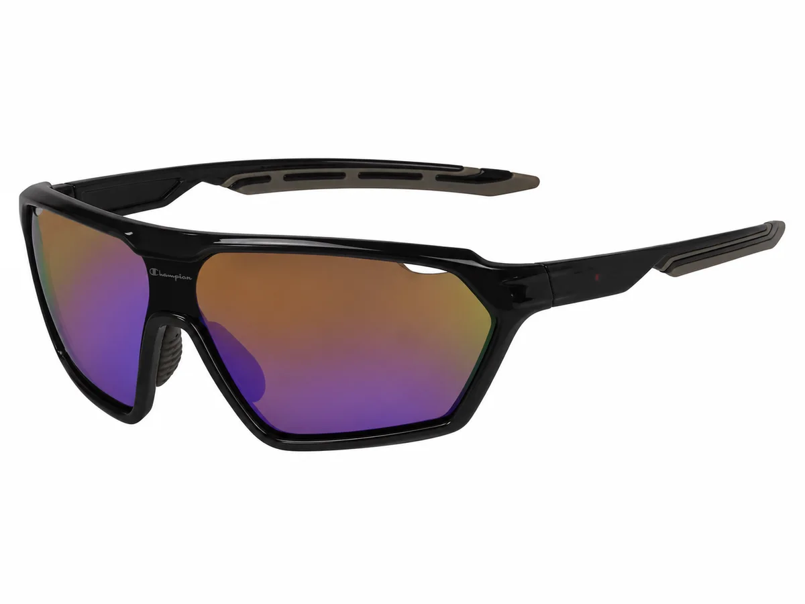
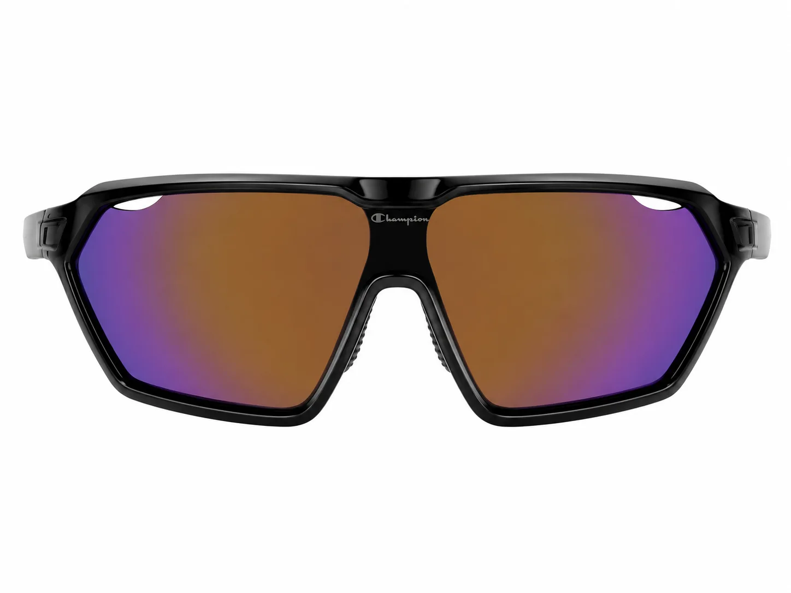
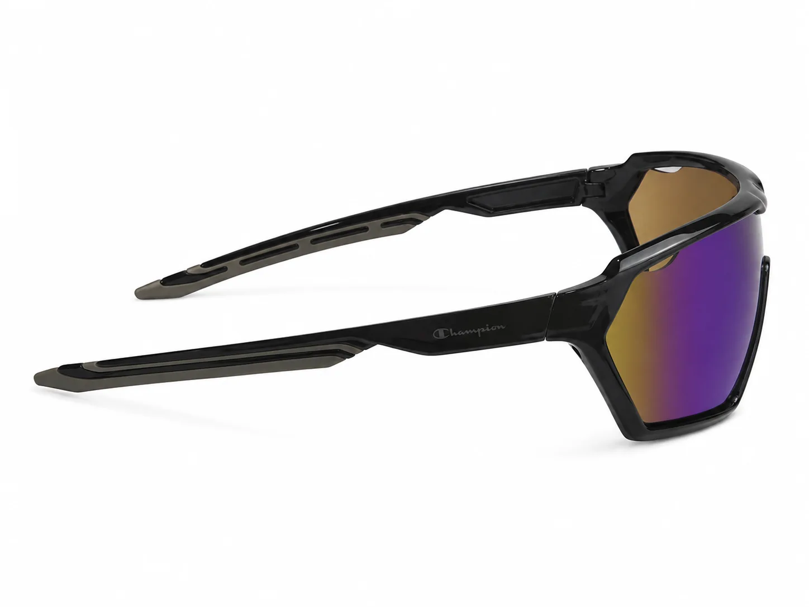

Lentes de sol deportivos: cómo presentar su silueta
Una pantalla envolvente comunica movimiento y presencia. Para venderla con criterio, el asesor necesita traducir su forma en observaciones claras sobre cobertura visual, ajuste y estilo, sin inventar especificaciones.

El diseño deportivo atrae por su forma, pero la conversación comercial mejora cuando la óptica separa lo visible de lo que debe verificarse. Así el cliente recibe una recomendación útil y la marca conserva credibilidad.
Empieza por lo que el cliente puede ver
Describe la silueta antes de usar términos técnicos. En el CHS-07 C1 se observa una pantalla deportiva envolvente, frente negro y lente multicolor espejado. Esa descripción es concreta, fácil de comparar y ayuda a identificar si su presencia encaja con el estilo del cliente.
Convierte la cobertura visual en una demostración
La forma envolvente cubre una zona visual amplia. En tienda, el asesor puede invitar a probar la pieza, observar el campo lateral, comprobar el apoyo y revisar si la inclinación se adapta al rostro. La experiencia real de ajuste vale más que una promesa genérica.

Habla de ajuste sin convertirlo en una garantía
La comodidad depende del rostro y del uso. Revisa apoyo nasal, contacto de las varillas y estabilidad con movimientos normales. Evita afirmar que un modelo es adecuado para una disciplina concreta si esa aplicación no está documentada por la ficha comercial.
Separa estética y prestaciones verificadas
El lente espejado y el frente dinámico sostienen una lectura deportiva. Datos como categoría UV, medidas o materiales específicos deben salir de la información confirmada por Innova. Si aparecen pendientes en el catálogo, comunícalos como pendientes y solicita la ficha actualizada.

Ubícalo donde pueda explicar la colección
En la vitrina, una pantalla como el CHS-07 C1 funciona bien como referencia de alto impacto. Colócala cerca de solares urbanas o rectangulares para mostrar contraste y permitir que el asesor pase de una opción expresiva a otra más cotidiana sin perder la narrativa Champion.
Explora el CHS-07 C1
Consulta las imágenes reales disponibles y compáralo con otras siluetas solares del catálogo profesional.